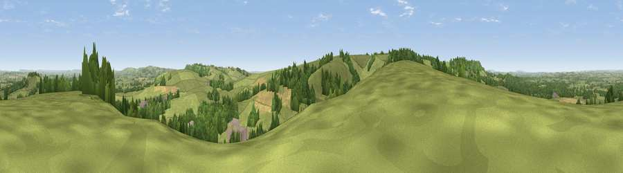

Viewpoint near Buckland Newton
#12936 in England · top 29% of its area beats it · near Buckland NewtonThe view, rendered

A 360° render of this exact spot computed from the terrain model, tree cover and land cover — summer colours, afternoon light, calibrated against photographs of famous viewpoints. Real trees, hedges and buildings will differ in detail.
The panorama
Grey silhouette: terrain skyline in each direction (720 bearings, Earth curvature and refraction included). Dashed green: skyline with trees (+15 m) and buildings (+8 m) as obstacles. Blue strip: how far the ground is visible on each bearing.
Where the view opens
Wedge length = distance to the farthest visible ground on that bearing (vegetation-aware). Rings at 10, 25 and 50 km.
What fills the view
66% grassland · 23% woodland · 8% cropland · 2% built-up
Angular shares of the visible panorama (visual magnitude), not map area. Landscape diversity 0.39 (0–1 Shannon).
Key numbers
More beautiful places nearby
The staircase of upgrades: each row has a higher view potential than everything closer. Driving times are estimates from straight-line distance, calibrated against real road routing — check an actual route before setting out.
| Place | Direction | Drive | Score |
|---|---|---|---|
| Viewpoint near Buckland Newton | WSW · 0 km | ~1 min | 64.4 |
| Watts Hill [Giant Hill] | SSW · 2 km | ~5 min | 67.5 |
| Viewpoint near Hilfield | W · 3 km | ~8 min | 71.6 |
| Viewpoint near Woolland | E · 9 km | ~18 min | 74.5 |
| Viewpoint near North Poorton | WSW · 16 km | ~29 min | 75.4 |
| Eggardon Hill | SW · 17 km | ~30 min | 80.3 |
| Viewpoint near Askerswell | SW · 18 km | ~31 min | 81.7 |
| Viewpoint near Portesham | SSW · 19 km | ~32 min | 82.7 |
50.84522, -2.45269 · source: screening · position refined by local search. Computed location — check access rights before visiting.